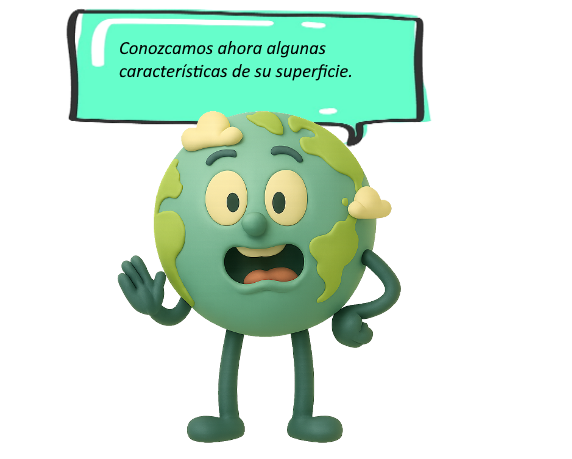
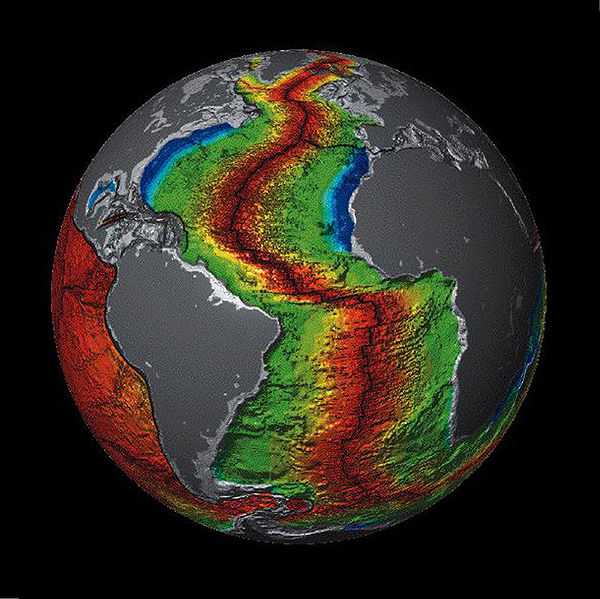

"Corteza" terrestre

Foco de atención para esta actividad: comprender dónde se ubica la corteza terrestre con respecto a las demás capas, y su composición.
La corteza terrestre es la capa más delgada y superficial, caracterizada por una baja densidad si se le compara con las demás capas.

Tiene un espesor de 5 a 70 kilómetros y en realidad consta
de 2 capas:
- la corteza continental y
- la corteza oceánica.
La corteza continental, es aquella que forma los continentes y se compone principalmente de granito y de otras rocas menos densas que las de la corteza oceánica, por eso se encuentra en la parte superior.
Por su parte, la corteza oceánica tiene de 5 a 10 kilómetros de espesor, y está compuesta principalmente por gabro, diabasa y basalto.
Forma el lecho de los océanos y es la menos gruesa de las dos capas de la corteza. Sedimentos y rocas sedimentarias ocupan el área externa de toda la corteza.
En total, la corteza constituye menos del 1 por ciento del volumen del planeta.